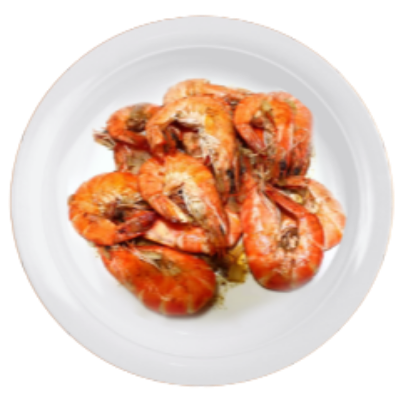

INGREDIENTS
- 2 lbs shrimp cleaned
- 2 tablespoons parsley choped
- 1/2 cup seasoned dry bread crumbs
- 1/4 cup butter
- 1 head garlic crushed
- 1 cup lemon lime soda
- 1 teaspoon lemon juice
- Salt and pepper to taste

Buttered Shrimp

INSTRUCTION
- Marinate the shrimp in lemon soda for about 10 minutes.
- Melt the butter in a pan.
- Add the garlic. Cook in a low heat until the color turns light brown.
- Put in the shrimp. Adjust heat to high. Stir-fry until the shrimp turns orange.
- Season with ground black pepper, salt, and lemon juice. Stir.
- Add parsley. Cook for 30 seconds.
- Serve hot. Share and Enjoy!